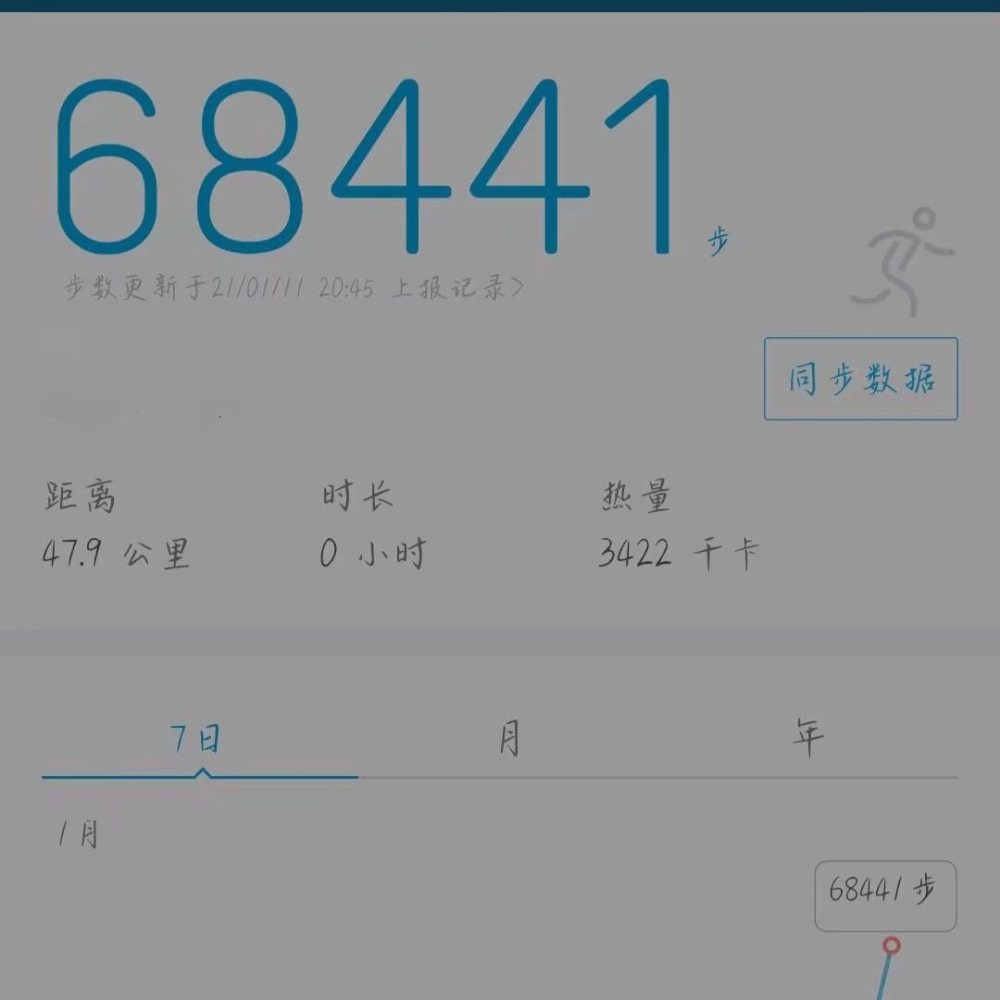

因为我下不去手自杀，我只能一直走。
我的心已经死了，或者说我从来都没有活过，我从出生开始就没有一刻为自己而活。
我从早上六点一直走到晚上七点多，我当时是想要死在爸爸的坟前，肯定没有人能找到我。但是太远了，走到走不动了还有20多公里的路。
当时多么希望能来一辆车撞死我，可惜没有。我想就这样死在路边算了，当时还是冬天只有几度，就这样冻死我吧。

我的心已经死了，或者说我从来都没有活过，我从出生开始就没有一刻为自己而活。
我从早上六点一直走到晚上七点多，我当时是想要死在爸爸的坟前，肯定没有人能找到我。但是太远了，走到走不动了还有20多公里的路。
当时多么希望能来一辆车撞死我，可惜没有。我想就这样死在路边算了，当时还是冬天只有几度，就这样冻死我吧。

那天晚上我写好了遗书，翻来覆去的睡不着，但是我已经哭不出来了，已经彻底麻木了。
第二天早上，大概6点的时候，我没有像往常一样往学校的方向走。一想到上学，我就呼吸困难，恶心想吐，感觉心脏要被压扁。好想结束这一切，我想死，但是自杀又下不去手，我是胆小鬼。如果能无痛自杀，我大概已经死了 https://t.co/YAocMR0zI5
第二天早上，大概6点的时候，我没有像往常一样往学校的方向走。一想到上学，我就呼吸困难，恶心想吐，感觉心脏要被压扁。好想结束这一切，我想死，但是自杀又下不去手，我是胆小鬼。如果能无痛自杀，我大概已经死了 https://t.co/YAocMR0zI5